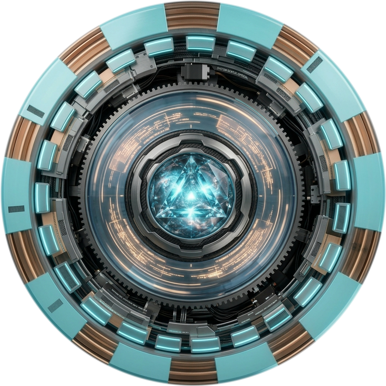
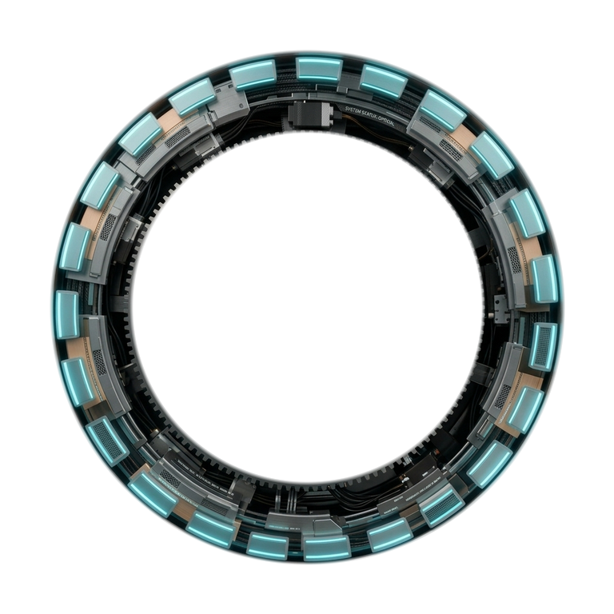
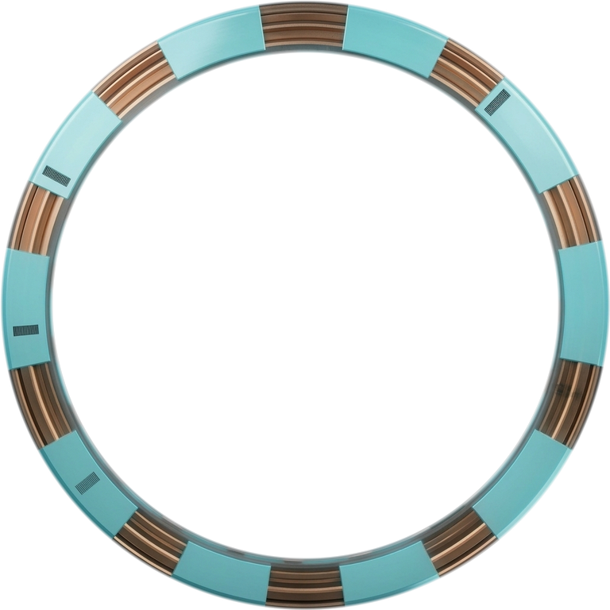
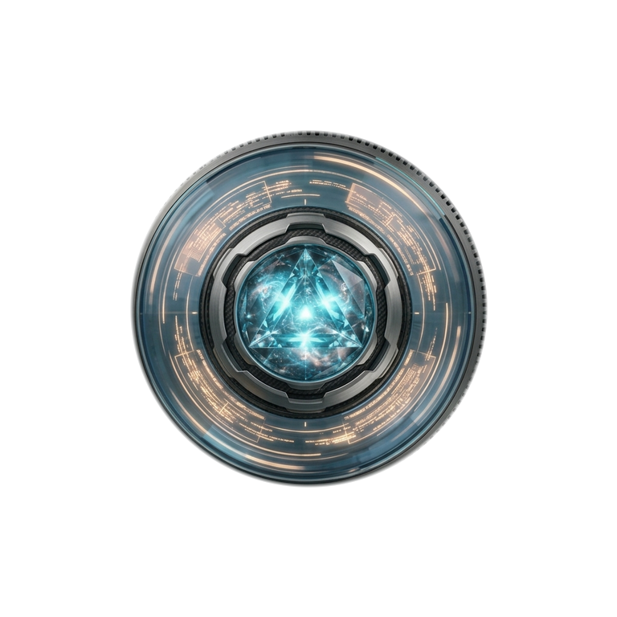

STANDBYResolving route




Mission Monitor
Dependency-aware work, Results, and verification
No agent missions yetLong tasks delegated by Echo will appear here with live execution details.
Models & Routing
Choose an available model for Echo’s next request
Model RoutesChanges apply to the active brain
Reading configured models…
MCP Connections
No external MCP servers configured.